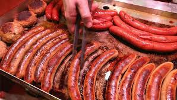
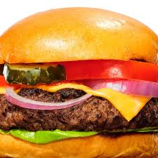
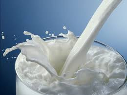
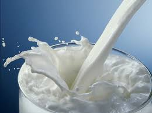
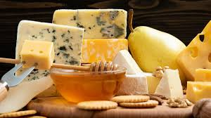
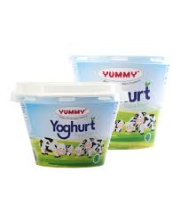

Beef Steak
Beef Steak
 Pure Beef
Pure Beef
Our Premium Beef and Dairy Products
Beef Cattle Products
Our Beef Cattle products represent the highest quality cuts and meats sourced from the finest beef cattle. We take great pride in delivering an extensive variety of products that cater to every taste, ensuring that our customers enjoy the best from the farm to the table. Our offerings include premium cuts of beef such as juicy steaks, tender ribs, and savory ground beef, all expertly prepared to deliver an unforgettable dining experience. In addition to these traditional cuts, we also provide a wide range of specialty products, including beef sausages, which are made with a unique blend of spices for an extra burst of flavor. For those seeking a quick meal, our ready-made beef burgers are a perfect choice, offering a combination of tenderness and deliciousness. We also offer pure beef products, crafted for the true beef connoisseur. Whether you're grilling up a steak, enjoying a classic beef burger, or trying our flavorful sausages, we promise top-quality, fresh products that meet the highest standards of taste and sustainability. Our commitment is not just to provide the best beef cuts, but to ensure that each product is delivered with care, so you can enjoy the finest beef products at every meal.
Beef Steak
Pure Beef
 Beef Sausge  Beef Burger
Dairy Cattle Products
When it comes to dairy products, our offerings are second to none. Sourced from carefully selected dairy cattle, we provide a wide variety of milk and milk-based products that are rich in flavor, texture, and nutritional value. Our fresh cow milk is the perfect base for all your dairy needs, whether you're enjoying it in a cup, using it in cooking, or adding it to your favorite recipes. For those who enjoy a thicker, creamier texture, our yoghurt and milked milk are made to delight. We also offer jagged milk, a unique variation of milk that is perfect for those who enjoy a different taste or are looking for something a little more exciting in their dairy selection. One of our standout products is the Inyange Yoghurt, which is made from premium milk and offers a creamy, satisfying experience with a rich, slightly tangy taste. For cheese lovers, we offer a range of delicious, high-quality cheeses that will elevate your culinary creations. Whether you're baking, cooking, or just snacking, our dairy products promise freshness, taste, and the highest level of quality, ensuring that every bite is as satisfying as the last. With each of these products, we aim to bring the best from our cows directly to your kitchen, giving you wholesome and nutritious options for every meal.
 Mcow

Milk
Mcow

Milk
 Cheese  Yoghurt